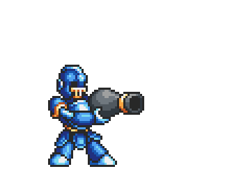
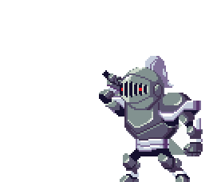
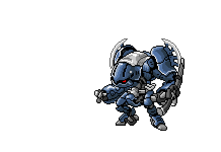

|  |
Action RPGsTypically action RPGs feature each player directly controlling a single character in real time, and feature a strong focus on combat and action with plot and character interaction kept to a minimum. Early action RPGs tended to follow the template set by 1980s Nihon Falcom titles such as the Dragon Slayer and Ys series, which feature hack and slash combat where the player character's movements and actions are controlled directly, using a keyboard or game controller, rather than using menus.This formula was refined by the action-adventure game, The Legend of Zelda (1986), which set the template used by many subsequent action RPGs, including innovations such as an open world, nonlinear gameplay, battery backup saving,and an attack button that animates a sword swing or projectile attack on the screen.The game was largely responsible for the surge of action-oriented RPGs released since the late 1980s, both in Japan and North America.The Legend of Zelda series would continue to exert an influence on the transition of both console and computer RPGs from stat-heavy, turn-based combat towards real-time action combat in the following decades. |
|  |
MMORPGsThough many of the original RPGs for the PLATO mainframe system in the late 1970s also supported multiple, simultaneous players,the popularity of multiplayer modes in mainstream RPGs did not begin to rise sharply until the early to mid-1990s.For instance, Secret of Mana (1993), an early action role-playing game by Square, was one of the first commercial RPGs to feature cooperative multiplayer gameplay, offering two-player and three-player action once the main character had acquired his party members.Later, Diablo (1996) would combine CRPG and action game elements with an Internet multiplayer mode that allowed up to four players to enter the same world and fight monsters, trade items, or fight against each other. Also during this time period, the MUD genre that had been spawned by MUD1 in 1978 was undergoing a tremendous expansion phase due to the release and spread of LPMud (1989) and DikuMUD (1991). Soon, driven by the mainstream adoption of the Internet, these parallel trends merged in the popularization of graphical MUDs, which would soon become known as massively multiplayer online role-playing games or MMORPGs,[130][131] beginning with games like Meridian 59 (1995), Nexus: The Kingdom of the Winds (1996), Ultima Online (1997), Lineage (1998), and EverQuest (1999), and leading to modern phenomena such as RuneScape (2001), Final Fantasy XI (2003), Eve Online (2003) and World of Warcraft (2004). |
|  |
Sandbox RPGsSandbox RPGs, or open world RPGs, allow the player a great amount of freedom and usually feature a somewhat more open free-roaming world (meaning the player is not confined to a single path restricted by rocks or fences etc.).Sandbox RPGs possess similarities to other sandbox games, such as the Grand Theft Auto series, with a large number of interactable NPCs, large amount of content and typically some of the largest worlds to explore and longest play-times of all RPGs due to an impressive amount of secondary content not critical to the game's main storyline. Sandbox RPGs often attempt to emulate an entire region of their setting.Popular examples of this subgenre include the Dragon Slayer series by Nihon Falcom, the early Dragon Quest games by Chunsoft, Zelda II: The Adventure of Link by Nintendo, Wasteland by Interplay Entertainment, the SaGa and Mana series by Squaresoft, System Shock 2 by Irrational Games and Looking Glass Studios, Deus Ex by Ion Storm, The Elder Scrolls and Fallout series by Bethesda Softworks and Interplay Entertainment, Fable by Lionhead Studios, the Gothic series by Piranha Bytes, the Xenoblade series by Monolith Soft, and the Souls series by From Software. |